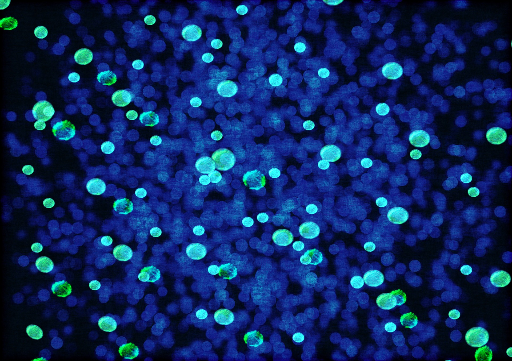

Angebot
Frequenztherapie (Rife)
Gezielte Frequenzen für Ihr Wohlbefinden
Die Frequenztherapie nach Dr. Royal Raymond Rife nutzt spezifische elektromagnetische Frequenzen, um Ihr natürliches Wohlbefinden sanft und ganzheitlich zu unterstützen. Eine bewährte Anwendung für Körper und Geist.
Hintergrund
Die Kraft der Frequenzen
Dr. Royal Raymond Rife konnte erstmals in der Geschichte der Menschheit lebende Mikroorganismen unter dem Mikroskop betrachten und die Einwirkung bestimmter Frequenzen auf Bakterien und Viren untersuchen. Er entdeckte, dass jeder Organismus eine individuelle elektromagnetische Signatur besitzt — und dass gezielte Frequenzen das natürliche Gleichgewicht im Körper unterstützen können.
Die Rife-Frequenzanwendung kann für verschiedene Bereiche des Wohlbefindens eingesetzt werden und ist im Allgemeinen gut verträglich. Die Anwendung ist sanft, nicht-invasiv und eignet sich hervorragend als Ergänzung zu einem ganzheitlichen Wellness-Konzept.
Besonders empfehlenswert ist die Frequenzanwendung bei allgemeinem Unwohlsein, zur Unterstützung der körpereigenen Balance und als wohltuende Begleitung in Phasen erhöhter Belastung.
Ihre Vorteile
Was die Frequenzanwendung für Sie tun kann
Entdecken Sie die vielfältigen Möglichkeiten der Rife-Frequenzanwendung — eine bewährte Methode zur Unterstützung Ihres natürlichen Wohlbefindens.
Natürliche Balance
Gezielte Frequenzen unterstützen das natürliche Gleichgewicht Ihres Körpers und fördern ein harmonisches Zusammenspiel aller Systeme.
Gute Verträglichkeit
Rife-Frequenzen sind im Allgemeinen gut verträglich und können vielseitig eingesetzt werden — für ein breites Spektrum an Wohlbefindensthemen.
Ganzheitlicher Ansatz
Die Frequenzanwendung fügt sich nahtlos in ein ganzheitliches Wellness-Konzept ein und ergänzt andere Anwendungen auf ideale Weise.
Individuelle Abstimmung
Jede Frequenzanwendung wird individuell auf Ihre Bedürfnisse abgestimmt — für eine persönliche und zielgerichtete Wellness-Erfahrung.

Ihr Erlebnis
So erleben Sie Ihre Frequenzanwendung
Jede Anwendung wird persönlich auf Sie abgestimmt. Wir begleiten Sie durch den gesamten Ablauf — aufmerksam und ganz für Sie da.
Persönliches Gespräch
Zu Beginn besprechen wir gemeinsam Ihre aktuellen Bedürfnisse und Wünsche. So können wir die Frequenzanwendung optimal auf Sie abstimmen.
Frequenzanwendung
In einer ruhigen, entspannten Atmosphäre erhalten Sie Ihre individuelle Frequenzanwendung. Die Sitzung dauert 60 bis 70 Minuten. Sie können sich dabei vollkommen entspannen.
Nachbesprechung
Im Anschluss tauschen wir uns über Ihre Eindrücke aus und geben Ihnen Empfehlungen für die optimale Weiterführung Ihres Wohlbefindenswegs.
Häufige Fragen
Ihre Fragen zur Frequenzanwendung
Wie lange dauert eine Frequenzanwendung?
Ist die Anwendung vor Ort oder auch online möglich?
Was kostet eine Sitzung?
Für wen ist die Frequenzanwendung geeignet?
Diese Wellness-Anwendung ist keine medizinische Leistung und ersetzt keine ärztliche Beratung. Bei gesundheitlichen Fragen wenden Sie sich bitte an Ihren Arzt oder Ihre Ärztin. Es werden keine medizinischen Diagnosen gestellt und keine Heilversprechen abgegeben.
Jetzt erleben
Ihr Frequenz-Erlebnis wartet
Gönnen Sie sich eine bewusste Auszeit. Kontaktieren Sie uns für eine persönliche Beratung und Terminvereinbarung — wir freuen uns auf Sie.
Termin anfragen